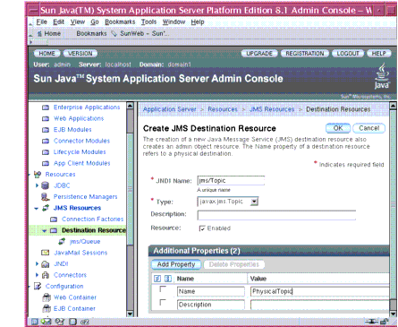
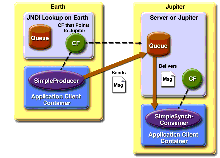

Writing Simple JMS Client Applications
This section shows how to create, package, and run simple JMS client programs packaged as stand-alone application clients. These clients access a J2EE server. The clients demonstrate the basic tasks that a JMS application must perform:
In a J2EE application, some of these tasks are performed, in whole or in part, by the container. If you learn about these tasks, you will have a good basis for understanding how a JMS application works on the J2EE platform.
This section covers the following topics:
Each example uses two programs: one that sends messages and one that receives them. You can run the programs in two terminal windows.
When you write a JMS application to run in a J2EE application, you use many of the same methods in much the same sequence as you do for a stand-alone application client. However, there are some significant differences. Using the JMS API in a J2EE Application describes these differences, and Chapter 34 provides examples that illustrate them.
The examples for this section are in the following directory:
A Simple Example of Synchronous Message Receives
This section describes the sending and receiving programs in an example that uses the
receivemethod to consume messages synchronously. This section then explains how to compile, package, and run the programs using the Application Server.The following sections describe the steps in creating and running the example:
Writing the Client Programs
The sending program,
src/SimpleProducer.java, performs the following steps:
- Retrieves command-line arguments that specify the destination name and the number of arguments:
final int NUM_MSGS;
String destName = new String(args[0]);
System.out.println("Destination name is " + destName);
if (args.length == 2){
NUM_MSGS = (new Integer(args[1])).intValue();
} else {
NUM_MSGS = 1;
}- Performs a JNDI lookup of the
ConnectionFactoryandDestination:
/*
* Create a JNDI API InitialContext object if none exists
* yet.
*/
Context jndiContext = null;
try {
jndiContext = new InitialContext();
} catch (NamingException e) {
System.out.println("Could not create JNDI API " +
"context: " + e.toString());
System.exit(1);
}
/*
* Look up connection factory and destination. If either
* does not exist, exit. If you look up a
* TopicConnectionFactory or a QueueConnectionFactory,
* program behavior is the same.
*/
ConnectionFactory connectionFactory = null;
Destination dest = null;
try {
connectionFactory = (ConnectionFactory)
jndiContext.lookup("jms/ConnectionFactory");
dest = (Destination) jndiContext.lookup(destName);
}
} catch (Exception e) {
System.out.println("JNDI API lookup failed: " +
e.toString());
e.printStackTrace();
System.exit(1);
}- Creates a
Connectionand aSession:
Connection connection =
connectionFactory.createConnection();
Session session = connection.createSession(false,
Session.AUTO_ACKNOWLEDGE);- Creates a
MessageProducerand aTextMessage:
MessageProducer producer = session.createProducer(dest);
TextMessage message = session.createTextMessage();- Sends one or more messages to the destination:
for (int i = 0; i < NUM_MSGS; i++) {
message.setText("This is message " + (i + 1));
System.out.println("Sending message: " +
message.getText());
producer.send(message);
}- Sends an empty control message to indicate the end of the message stream:
producer.send(session.createMessage());Sending an empty message of no specified type is a convenient way to indicate to the consumer that the final message has arrived.
- Closes the connection in a
finallyblock, automatically closing the session andMessageProducer:
} finally {
if (connection != null) {
try {
connection.close();
} catch (JMSException e) {}
}
}The receiving program,
src/SimpleSynchConsumer.java, performs the following steps:
- Performs a JNDI lookup of the
ConnectionFactoryandDestination.- Creates a
Connectionand aSession.- Creates a
MessageConsumer:
consumer = session.createConsumer(dest);- Starts the connection, causing message delivery to begin:
connection.start();- Receives the messages sent to the destination until the end-of-message-stream control message is received:
while (true) {
Message m = consumer.receive(1);
if (m != null) {
if (m instanceof TextMessage) {
message = (TextMessage) m;
System.out.println("Reading message: " +
message.getText());
} else {
break;
}
}
}Because the control message is not a
TextMessage, the receiving program terminates thewhileloop and stops receiving messages after the control message arrives.- Closes the connection in a
finallyblock, automatically closing the session andMessageConsumer.The
receivemethod can be used in several ways to perform a synchronous receive. If you specify no arguments or an argument of0, the method blocks indefinitely until a message arrives:For a simple client program, this may not matter. But if you do not want your program to consume system resources unnecessarily, use a timed synchronous receive. Do one of the following:
The
SimpleSynchConsumerprogram uses an indefinitewhileloop to receive messages, callingreceivewith a timeout argument. CallingreceiveNoWaitwould have the same effect.Compiling the Clients
You can compile the examples using the
asanttool, as described in Building the Examples.To compile the examples, do the following:
This command uses the
build.xmlfile in thesimpledirectory to compile all the source files in the directory. The class files are placed in thebuilddirectory.Starting the JMS Provider
When you use the Application Server, your JMS provider is the Application Server. Start the server as described in Starting and Stopping the Application Server.
Creating JMS Administered Objects
Creating the JMS administered objects for this section involves the following:
If you built and ran the
SimpleMessageexample in Chapter 28 and did not delete the resources afterward, you need to create only half of these resources: those that involve topics.To start the Admin Console, follow the instructions in Starting the Admin Console.
To create the connection factory, perform the following steps:
- In the tree component, expand the Resources node, then expand the JMS Resources node.
- Select the Connection Factories node.
- On the JMS Connection Factories page, click New. The Create JMS Connection Factory page appears.
- In the JNDI Name field, type
jms/ConnectionFactory.- Choose
javax.jms.ConnectionFactoryfrom the Type combo box.- Verify that the Enabled checkbox is selected. The Admin Console appears as shown in Figure 33-6.
- Click OK to save the connection factory.

Figure 33-6 Creating a JMS Connection Factory
To create the physical destinations, perform the following steps:
- In the tree component, expand the Configuration node, then expand the Java Message Service node.
- Select the Physical Destinations node.
- On the Physical Destinations page, click New. The Create Physical Destination page appears.
- In the Physical Destination Name field, type
PhysicalQueue.- Choose
queuefrom the Type combo box.- Click OK.
- Click New again.
- In the Physical Destination Name field, type
PhysicalTopic.- Choose
topicfrom the Type combo box.- Click OK.
To create the destination resources and link them to the physical destinations, perform the following steps:
- In the tree component, expand the Resources node, then expand the JMS Resources node.
- Select the Destination Resources node.
- On the JMS Destination Resources page, click New. The Create JMS Destination Resource page appears.
- In the JNDI Name field, type
jms/Queue.- Choose
javax.jms.Queuefrom the Type combo box.- Verify that the Enabled checkbox is selected.
- In the Additional Properties area, type
PhysicalQueuein the Value field for theNameproperty.- Click OK.
- Click New again.
- In the JNDI Name field, type
jms/Topic.- Choose
javax.jms.Topicfrom the Type combo box.- Verify that the Enabled checkbox is selected.
- In the Additional Properties area, type
PhysicalTopicin the Value field for theNameproperty. The Admin Console appears as shown in Figure 33-7.- Click OK to save the resource.

Figure 33-7 Creating a JMS Destination Resource
Packaging the Clients
The simplest way to run these examples using the Application Server is to package each one in an application client JAR file.
First, start
deploytool. For instructions, see Starting the deploytool Utility.Package the
SimpleProducerexample as follows:
- Choose File
New
- In the JAR File Contents screen, select the radio button labeled Create New Stand-Alone AppClient Module.
- Click Browse next to the AppClient File field and navigate to the
<INSTALL>/j2eetutorial14/examples/jms/simple/directory.- Type
SimpleProducerin the File Name field, and click Create Module File.- Verify that
SimpleProducerappears in the AppClient Display Name field.- Click the Edit Contents button.
- In the dialog box, locate the
builddirectory. SelectSimpleProducer.classfrom the Available Files tree. Click Add and then OK.- In the General screen, select
SimpleProducerfrom the Main Class drop-down menu.- Click Next.
- Click Finish.
Package the
SimpleSynchConsumerexample in the same way, except for the values listed in Table 33-3.
Running the Clients
You run the sample programs using the
appclientcommand. Each of the programs takes one or more command-line arguments: a destination name and, forSimpleProducer, a number of messages.Run the clients as follows.
- Run the
SimpleProducerprogram, sending three messages to the queuejms/Queue:
appclient -client SimpleProducer.jar jms/Queue 3The output of the program looks like this:
Destination name is jms/Queue
Sending message: This is message 1
Sending message: This is message 2
Sending message: This is message 3The messages are now in the queue, waiting to be received.
- In the same window, run the
SimpleSynchConsumerprogram, specifying the queue name:
appclient -client SimpleSynchConsumer.jar jms/QueueThe output of the program looks like this:
Destination name is jms/Queue
Reading message: This is message 1
Reading message: This is message 2
Reading message: This is message 3- Now try running the programs in the opposite order. Run the
SimpleSynchConsumerprogram. It displays the queue name and then appears to hang, waiting for messages.- In a different terminal window, run the
SimpleProducerprogram. When the messages have been sent, theSimpleSynchConsumerprogram receives them and exits.- Now run the
SimpleProducerprogram using a topic instead of a queue:
appclient -client SimpleProducer.jar jms/Topic 3The output of the program looks like this:
Destination name is jms/Topic
Sending message: This is message 1
Sending message: This is message 2
Sending message: This is message 3- Now run the
SimpleSynchConsumerprogram using the topic:
appclient -client SimpleSynchConsumer.jar jms/TopicThe result, however, is different. Because you are using a topic, messages that were sent before you started the consumer cannot be received. (See Publish/Subscribe Messaging Domain, for details.) Instead of receiving the messages, the program appears to hang.
- Run the
SimpleProducerprogram again in another terminal window. Now theSimpleSynchConsumerprogram receives the messages:
Destination name is jms/Topic
Reading message: This is message 1
Reading message: This is message 2
Reading message: This is message 3Because the examples use the common interfaces, you can run them using either a queue or a topic.
A Simple Example of Asynchronous Message Consumption
This section describes the receiving programs in an example that uses a message listener to consume messages asynchronously. This section then explains how to compile and run the programs using the Application Server.
The following sections describe the steps in creating and running the example:
Writing the Client Programs
The sending program is
src/SimpleProducer.java, the same program used in the example in A Simple Example of Synchronous Message Receives. You may, however, want to comment out the following line of code, where the producer sends a nontext control message to indicate the end of the messages:An asynchronous consumer normally runs indefinitely. This one runs until the user types the letter
qorQto stop the program, so it does not use the nontext control message.The receiving program,
src/SimpleAsynchConsumer.java, performs the following steps:
- Performs a JNDI lookup of the
ConnectionFactoryandDestination.- Creates a
Connectionand aSession.- Creates a
MessageConsumer.- Creates an instance of the
TextListenerclass and registers it as the message listener for theMessageConsumer:
listener = new TextListener();
consumer.setMessageListener(listener);- Starts the connection, causing message delivery to begin.
- Listens for the messages published to the destination, stopping when the user types the character
qorQ:
System.out.println("To end program, type Q or q, " +
"then <return>");
inputStreamReader = new InputStreamReader(System.in);
while (!((answer == 'q') || (answer == 'Q'))) {
try {
answer = (char) inputStreamReader.read();
} catch (IOException e) {
System.out.println("I/O exception: "
+ e.toString());
}
}- Closes the connection, which automatically closes the session and
MessageConsumer.The message listener,
src/TextListener.java, follows these steps:
- When a message arrives, the
onMessagemethod is called automatically.- The
onMessagemethod converts the incoming message to aTextMessageand displays its content. If the message is not a text message, it reports this fact:
public void onMessage(Message message) {
TextMessage msg = null;
try {
if (message instanceof TextMessage) {
msg = (TextMessage) message;
System.out.println("Reading message: " +
msg.getText());
} else {
System.out.println("Message is not a " +
"TextMessage");
}
} catch (JMSException e) {
System.out.println("JMSException in onMessage(): " +
e.toString());
} catch (Throwable t) {
System.out.println("Exception in onMessage():" +
t.getMessage());
}
}Compiling the Clients
Compile the programs if you did not do so before or if you edited
SimpleProducer.javaas described in Writing the Client Programs:Starting the JMS Provider
If you did not do so before, start the Application Server.
You will use the connection factories and destinations you created in Creating JMS Administered Objects.
Packaging the SimpleAsynchConsumer Client
If you did not do so before, start
deploytool.If you did not package the
SimpleProducerexample, follow the instructions in Packaging the Clients to do so. If you edited theSimpleProducer.javacode as described in Writing the Client Programs, choose ToolsSimpleProducer.jarfile, then save theSimpleProducer.jarfile.Package the
SimpleAsynchConsumerexample in the same way asSimpleProducer, except for the values listed in Table 33-4.
Running the Clients
As before, you run the sample programs using the
appclientcommand.Run the clients as follows.
- Run the
SimpleAsynchConsumerprogram, specifying the topicjms/Topicand its type.
appclient -client SimpleAsynchConsumer.jar jms/TopicThe program displays the following lines and appears to hang:
Destination name is jms/Topic
To end program, type Q or q, then <return>- In another terminal window, run the
SimpleProducerprogram, sending three messages. The commands look like this:
appclient -client SimpleProducer.jar jms/Topic 3The output of the program looks like this:
Destination name is jms/Topic
Sending message: This is message 1
Sending message: This is message 2
Sending message: This is message 3In the other window, the
SimpleAsynchConsumerprogram displays the following:
Destination name is jms/Topic
To end program, type Q or q, then <return>
Reading message: This is message 1
Reading message: This is message 2
Reading message: This is message 3If you did not edit
SimpleProducer.java, the following line also appears:
Message is not a TextMessage- Type
Qorqto stop the program.- Now run the programs using a queue. In this case, as with the synchronous example, you can run the
SimpleProducerprogram first, because there is no timing dependency between the sender and receiver:
appclient -client SimpleProducer.jar jms/Queue 3The output of the program looks like this:
Destination name is jms/Queue
Sending message: This is message 1
Sending message: This is message 2
Sending message: This is message 3- Run the
SimpleAsynchConsumerprogram:
appclient -client SimpleAsynchConsumer.jar jms/QueueThe output of the program looks like this:
Destination name is jms/Queue
To end program, type Q or q, then <return>
Reading message: This is message 1
Reading message: This is message 2
Reading message: This is message 3- Type
Qorqto stop the program.Running JMS Client Programs on Multiple Systems
JMS client programs using the Application Server can exchange messages with each other when they are running on different systems in a network. The systems must be visible to each other by name--the UNIX host name or the Microsoft Windows computer name--and must both be running the Application Server. You do not have to install the tutorial examples on both systems; you can use the examples installed on one system if you can access its file system from the other system.
Note: Any mechanism for exchanging messages between systems is specific to the J2EE server implementation. This tutorial describes how to use the Application Server for this purpose.
Suppose that you want to run the
SimpleProducerprogram on one system,earth, and theSimpleSynchConsumerprogram on another system,jupiter. Before you can do so, you need to perform these tasks:
Note: A limitation in the JMS provider in the Application Server may cause a runtime failure to create a connection to systems that use the Dynamic Host Configuration Protocol (DHCP) to obtain an IP address. You can, however, create a connection from a system that uses DHCP to a system that does not use DHCP. In the examples in this tutorial,
earthcan be a system that uses DHCP, andjupitercan be a system that does not use DHCP.
Before you begin, start the server on both systems:
Creating Administered Objects for Multiple Systems
To run these programs, you must do the following:
Create a new connection factory on
jupiteras follows:
- In the Admin Console, expand the Resources node, then expand the JMS Resources node.
- Select the Connection Factories node.
- On the JMS Connection Factories page, click New. The Create JMS Connection Factory page appears.
- In the JNDI Name field, type
jms/JupiterConnectionFactory.- Choose
javax.jms.ConnectionFactoryfrom the Type combo box.- Select the Enabled checkbox.
- Click OK.
Create a new connection factory with the same name on
earthas follows:
- In the Admin Console, expand the Resources node, then expand the JMS Resources node.
- Select the Connection Factories node.
- On the JMS Connection Factories page, click New. The Create JMS Connection Factory page appears.
- In the JNDI Name field, type
jms/JupiterConnectionFactory.- Choose
javax.jms.ConnectionFactoryfrom the Type combo box.- Select the Enabled checkbox.
- In the Additional Properties area, find the
AddressListproperty. In the Value field, replace the name of your current system with the name of the remote system (whatever the real name ofjupiteris), as follows:
mq://sysname:7676/,If the JMS service on the remote system uses a port number other than the default (7676), change the port number also.
- Click OK.
If you have already been working on either
earthorjupiter, you have the queue on one system. On the system that does not have the queue, perform the following steps:
- Use the Admin Console to create a physical destination named
PhysicalQueue, just as you did in Creating JMS Administered Objects.- Use the Admin Console to create a destination resource named
jms/Queueand set itsNameproperty to the valuePhysicalQueue.When you run the programs, they will work as shown in Figure 33-8. The program run on
earthneeds the queue onearthonly in order that the JNDI lookup will succeed. The connection, session, and message producer are all created onjupiterusing the connection factory that points tojupiter. The messages sent fromearthwill be received onjupiter.

Figure 33-8 Sending Messages from One System to Another
Running the Programs
These steps assume that you have the tutorial installed on only one of the two systems you are using.
To edit, update, and run the programs, perform the following steps on the system where you first ran them:
- In both
SimpleProducer.javaandSimpleSynchConsumer.java, change the line that looks up the connection factory so that it refers to the new connection factory:
connectionFactory = (ConnectionFactory)
jndiContext.lookup("jms/JupiterConnectionFactory");- Recompile the programs:
asant build- In
deploytool, choose ToolsSimpleProducer.jarandSimpleSynchConsumer.jarfiles.- Save the changed JAR files.
- Run
SimpleProduceronearth:
appclient -client SimpleProducer.jar jms/Queue 3- Run
SimpleSynchConsumeronjupiter:
appclient -client SimpleSynchConsumer.jar jms/QueueBecause both connection factories have the same name, you can run either the producer or the consumer on either system.
For examples showing how to deploy J2EE applications on two different systems, see An Application Example That Consumes Messages from a Remote J2EE Server and An Application Example That Deploys a Message-Driven Bean on Two J2EE Servers.
Deleting the Connection Factory and Stopping the Server
You will need the connection factory
jms/JupiterConnectionFactoryin Chapter 34. However, if you wish to delete it, perform the following steps in the Admin Console:Remember to delete the connection factory on both systems.
You can also use the Admin Console to delete the destinations and connection factories you created in Creating JMS Administered Objects. However, we recommend that you keep them, because they will be used in most of the examples in Chapter 34. After you have created them, they will be available whenever you restart the Application Server.
Delete the class files for the programs as follows:
If you wish, you can manually delete the client JAR files.
You can also stop the Application Server, but you will need it to run the sample programs in the next section.
All of the material in The J2EE(TM) 1.4 Tutorial is copyright-protected and may not be published in other works without express written permission from Sun Microsystems.